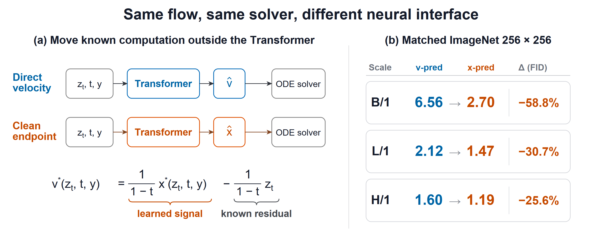
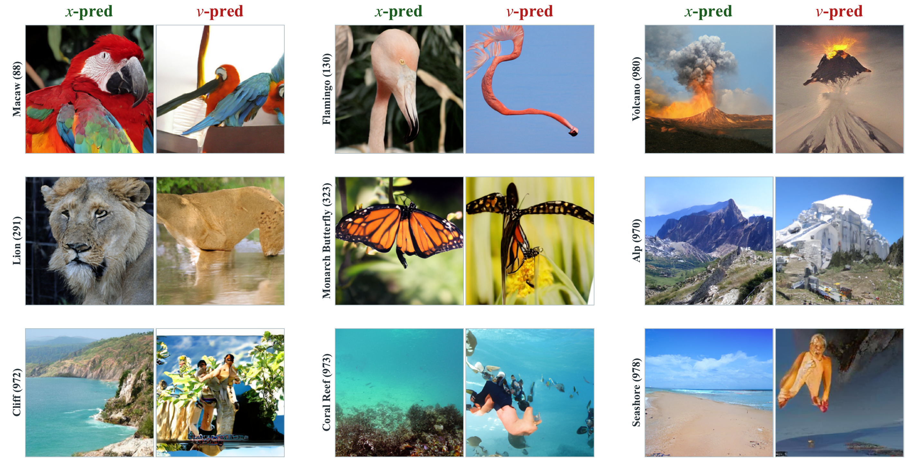
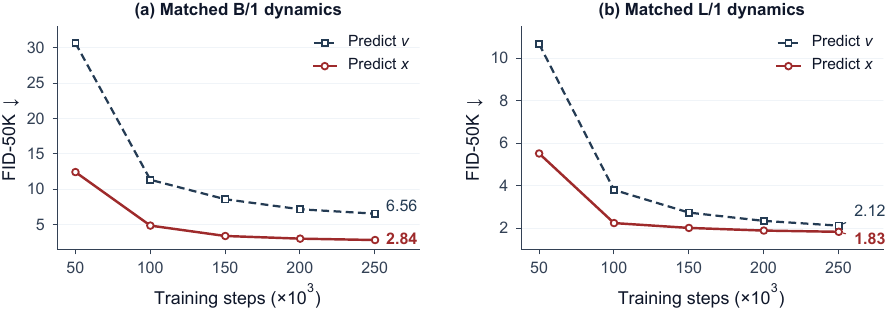
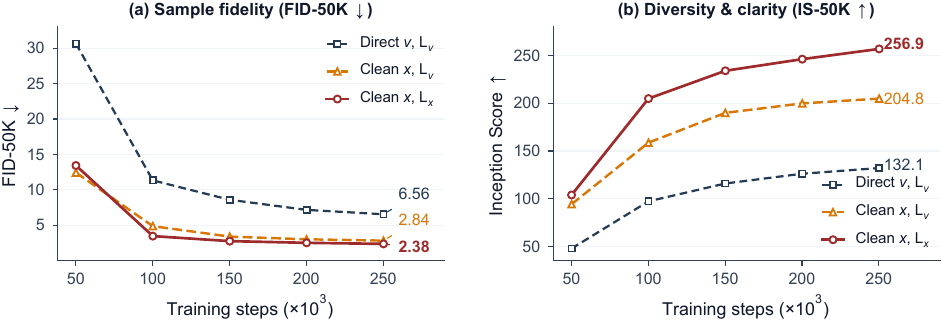

Equivalent Flows, Unequal Learning: Clean-Latent Prediction in Transformers
TL;DR: JLT predicts the clean VAE endpoint and converts it to velocity with a fixed affine readout. On class-conditional ImageNet 256×256, matched clean-latent prediction improves FID-50K from 6.56 to 2.84 at Base, from 2.12 to 1.83 at Large, and from 1.60 to 1.19 at Huge.

The solver interface need not be the neural interface. (a) Direct velocity prediction learns the vector field internally; clean-endpoint prediction exposes the clean latent and shifts the residual response to an exact readout. (b) Under matched ImageNet 256×256 setups, this reparameterization improves FID across B/1, L/1, and H/1.

Matched Base-scale samples. Random class-conditional generations from B/1 models under the same 50-step Heun sampler and CFG 2.9. Clean prediction keeps global structure and detail; direct velocity prediction more often distorts or blurs.
Results
Matched Prediction Target
Within each scale, the VAE, architecture, velocity loss, schedule, and sampler stay fixed. Only the network output changes. The Huge row uses each model's best FID instead of the shared CFG 2.9 point.
| Scale | Network predicts | Loss | FID-50K | IS |
|---|---|---|---|---|
| B/1 | velocity v | Lv | 6.56 | 132.12 |
| B/1 | clean latent x | Lv | 2.84 | 204.83 |
| L/1 | velocity v | Lv | 2.12 | 236.21 |
| L/1 | clean latent x | Lv | 1.83 | 301.07 |
| H/1 | velocity v | Lv | 1.60 | 327.41 |
| H/1 | clean latent x | Lv | 1.19 | 271.96 |
Clean prediction cuts FID by 3.72 (56.7%) at Base and 0.29 (13.7%) at Large. The Huge number is the FID-optimal CFG 2.2 point; the same sweep peaks at IS 334.21 at CFG 3.0.

Matched training curves. Clean prediction stays ahead at every measured checkpoint: B/1 ends at 2.84 versus 6.56, and L/1 ends at 1.83 versus 2.12.
Loss Weighting
Holding the clean output fixed, velocity-space MSE induces a (1-t)-2 weight on the clean error. Replacing it with unweighted clean MSE does not remove the gain.
| Model | Predicts | Loss | Weight | FID-50K | IS |
|---|---|---|---|---|---|
| B/1 velocity | v | Lv | — | 6.56 | 132.12 |
| JLT-B/1 | x | Lv | (1-t)-2 | 2.84 | 204.83 |
| JLT-B/1 | x | Lx | 1 | 2.38 | 256.88 |

Base-scale loss ablation. Both clean objectives beat direct velocity throughout training. Unweighted clean MSE finishes at FID 2.38 and IS 256.88.
Reference Models
Guided ImageNet 256×256 numbers below are taken from the cited reports. JLT-H/1 is the FID-optimal CFG 2.2 evaluation and does not use an external representation-alignment loss.
| Model | Space | Extra rep. | Params | FID-50K | IS |
|---|---|---|---|---|---|
| DiT-XL/2 | VAE | — | 675M | 2.27 | 278.20 |
| SiT-XL/2 | VAE | — | 675M | 2.06 | 277.50 |
| REPA-SiT-XL/2 | VAE | DINOv2 | 675M | 1.42 | 305.70 |
| MDTv2-XL/2 | VAE | — | 675.8M | 1.58 | 314.73 |
| DiffiT | VAE | — | 561M | 1.73 | 276.49 |
| JiT-H/16 | pixel | — | 953M | 1.86 | 303.40 |
| RiT | DINOv2 | DINOv2 | 676M | 1.14 | — |
| JLT-H/1 | VAE | — | 951.3M | 1.19 | 271.96 |
Method
Prediction Targets
Images are encoded by a frozen VAE. The linear path is z_t = t * x + (1-t) * epsilon, with sample-wise velocity v = x - epsilon. A clean prediction converts to the same velocity by
For squared error, the optimal clean and velocity predictors are algebraically equivalent. A finite Transformer is not: predicting v has to represent the input residual and time-dependent gain internally, while predicting x leaves that response to the readout.
Target Geometry
Under a local Gaussian model, velocity adds a unit floor to every latent direction. Measured FLUX.2 channel spectra match that shift.
| Target | Eigenvalue span | Condition number | Effective rank | 90% variance |
|---|---|---|---|---|
| Clean | 10.50 to 0.21 | 50.36 | 35.10 | 83 directions |
| Velocity | 11.50 to 1.21 | 9.52 | 78.97 | 109 directions |
Architecture
Parameter counts exclude the frozen VAE. Blocks use self-attention, SwiGLU, RMSNorm, rotary embeddings, and adaptive time/class modulation. Paper runs use patch size 1, so the 16×16 latent grid stays 256 tokens.
| Model | Depth | Width | Heads | Params |
|---|---|---|---|---|
| JLT-B/1 | 12 | 768 | 12 | 130.5M |
| JLT-L/1 | 24 | 1024 | 16 | 458.1M |
| JLT-H/1 | 32 | 1280 | 16 | 951.3M |
Other Checks
- Qwen-VAE, matched B/1: The same clean-versus-velocity comparison at CFG 2.9 ends at FID 6.54 versus 6.85 after 250K steps. Clean prediction is lower at 150K, 200K, and 250K.
- CFG sweeps: JLT-B/1 FID falls through the grid and is 2.70 at CFG 3.0. JLT-H/1 FID is lowest at 1.19 when CFG is 2.2.
- Loss weighting: Unweighted clean MSE at Base finishes at FID 2.38 and IS 256.88, so the gain is not only the induced time weight.
Citation
@misc{fu2026jltcleanlatentpredictionlatent,
title={JLT: Clean-Latent Prediction in Latent Diffusion Transformers},
author={Funing Fu and Tenghui Wang and Guanyu Zhou and Junyong Cen and Qichao Zhu},
year={2026},
eprint={2605.27102},
archivePrefix={arXiv},
primaryClass={cs.CV},
url={https://arxiv.org/abs/2605.27102}
}